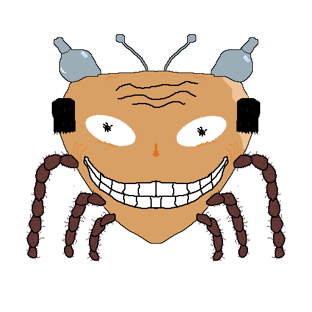

Project Movement Kickstarter Mock
Project Movement - Source Movement inspired 2D platformer
Project Movement is a 2D platformer about going fast, in the tradition of source gamemodes like Bhop and Surf (and if you aren't familiar with what those are, the important part is that you go fast). Where traditional 2D platformers place a hard limit on how fast the player can move, we seek to allow the player to move as fast as possible, in two dimensions.
Features
Project Movement focuses on inertial movement, where the core goal of the player is to build up speed and keep it through skillful use of movement abilities.

Our game will involve using a variety of movement mechanics across multiple levels with hazards and obstacles, creating a plethora of movement contexts. In keeping the Source movement gamemodes, our game features movement across maps with the goal of moving from the start to end zones, while a stopwatch runs and records the player's time.


Reward Tiers
Pledge $1 or more
Platform
Show your support for the development of Project Movement
- Developers' gratitude
Pledge $5 or more
Start Zone
Show your support for the development of Project Movement and
get access to early builds of the game as well as a name
in the credits
- Developers' gratitude
- Early Builds of the game
- Name in game credits
Pledge $10 or more
Checkpoint
Show your support for the development of Project Movement
and chat with the developers
- Developers' gratitude
- Early Builds of the game
- Name in game credits
- Private chat group with other backers and the game developers
Pledge $20 or more
End Zone
Show your support for the development of Project Movement
and influence its development as well!
- Developers' gratitude
- Early Builds of the game
- Name in game credits
- Private chat group with other backers and the game developers
- Suggest new features to the team
Goals
$100 - The game is funded and we can put some more polish into it
$150 - Implement previously scrapped movement abilities
$200 - More levels
$500 - Commision more art/sounds to add polish to the game
$1000 - Host leaderboards to record times of all players
Social Challenge
Follow us on Instagram at @proj_movement! If we reach 50 followers we'll add a a combat system and a mecha-spider boss fight to the game!
Timeline
Late January and Early February: The game is designed and basic prototyping completed
Mid Februrary: Movement mechanics solidified, multiple levels created
Late Februrary: Implement effects, improve UI, add more levels, add visual elements
Early March: Polishing and Game Release
Funding Breakdown
100% - Assets: art and sounds
Risks and Challenges (why trust us not to produce vaporware)
At this point in time, the game has already been in development for a while. We believe that the core of the experience we are trying to achieve already exists. We recognize our limited experience as game developers, but our team is more than experienced with writing and shipping software in general. Each of the members of our team has years of experience with programming and a refined skillset for designing and developing software systems of roughly this scale, gained through our previous coursework and project experience. We are confident that we will be able to deliver a complete product.